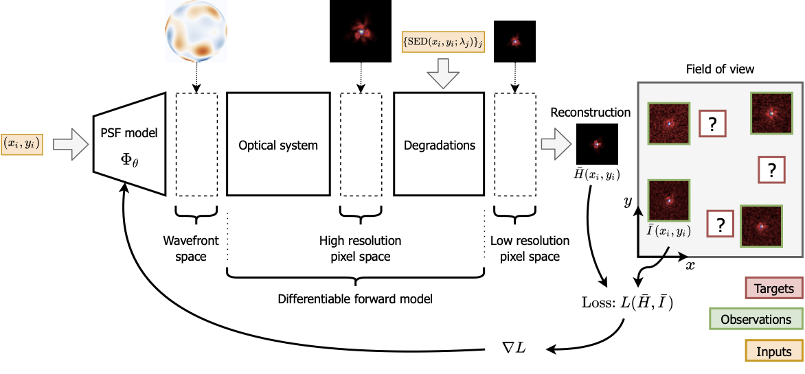

About
WaveDiff [Liaudat et al., 2023] is a differentiable data-driven wavefront-based PSF modelling framework in TensorFlow. It’s a hybrid methodology that constructs a model of the PSF across the telescope’s field-of-view by combining a forward parametric model of the wavefront with non-parametric data-driven techniques used to correct forward model errors in the wavefront space. WaveDiff has been especially designed for the European Space Agency’s Euclid Mission to ensure the mission can achieve and exceed its core science performance requirements for weak gravitational lensing.
A diagram of the WaveDiff framework is presented below. The PSF model for the instrument is estimated by training the parameters of the model using star observations in the field-of-view.
